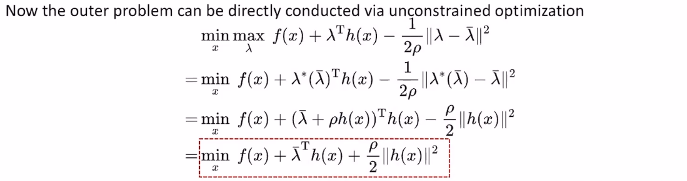
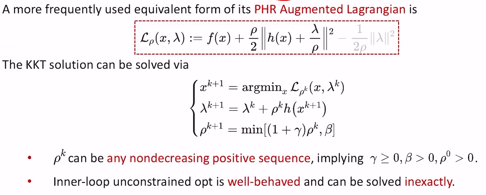
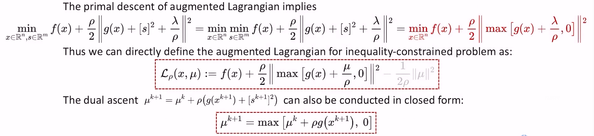
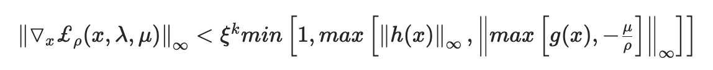
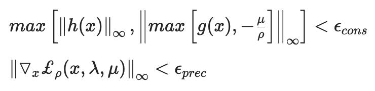

背景
- PHR是Powell、Hestenes和Rockafellar三个人名的缩写，前两个人在等式约束的优化问题中提出了增广拉格朗日乘子法，第三个作者将其推广到不等式约束上，并给出了新的解释
等式约束
- 问题形式
- $$min_{x\in\mathbb{R^{n}}}f(x)$$
- $$s.t.h(x)=0$$
- 推导
- Uzawa’s method
- 通过冯诺依曼定理将minmax问题转化为maxmin（对偶）问题，只需要满足原问题是严格凸的，原问题和对偶问题的最优解就是一致的
- $$d(\lambda):=min_{x}f(x)+\lambda^{T}h(x)$$
- 如果原问题不是严格凸，上面的式子求得的\(x^{*}\)就不是唯一的，导致\(d(\lambda)\)不是光滑的，梯度\(\triangledown d(\lambda)\)有可能不存在
- PHR Augmented Lagrangian Method
- 核心思路
- 不直接依赖冯诺依曼定理将minmax问题转化为maxmin问题。
- 再来观察一下原问题
- $$min_{x}max_{\lambda}f(x)+\lambda^{T}h(x)$$
- 现在的主要难点在于，函数的max部分，取值要么是无穷大要么是一个定值，他是一个non smooth的函数，一个很直观的想法是，把这部分近似一下，变成一个smooth的函数：
- 我们在右边加一个proximal point项。其思路是，我们并不知道\(\lambda\)最优应该取什么值，但可以先假设\(\lambda\)的最优解是\(\bar\lambda\)，那么我们在优化的时候尽可能让\(\lambda\)靠近\(\bar\lambda\)
- $$min_{x}max_{\lambda}f(x)+\lambda^{T}h(x)-\frac{1}{2\rho}\left|\lambda-\bar{\lambda}\right|$$
- $$(\rho>0)$$
- 加上这个proximal point项（正则项）之后，原问题的max部分就是对\(\lambda\)的线性项加上对\(\lambda\)的二次项，这对\(\lambda\)来说是一个连续且严格凸的函数，且二次函数的最优值是有解析解的

- 至此，该问题变成了一个针对\(x\)无约束优化问题
- 但目前我们只是得到了对原问题的minmax解的一个粗略估计，仍需要持续迭代提高精度，从两个角度进行提升
- 让正则项趋近于0，即\(\rho\to\infty\)
- 不断更新更准确的\(\bar\lambda\)，\(\bar\lambda\leftarrow\lambda^{*}(\bar\lambda)\)。因为第一次优化时，\(\bar\lambda\)是我们猜的，优化结束后，我们得到的\(\lambda^{*}\)比之前猜的\(\bar\lambda\)更接近最优解，所以第二次就把\(\lambda^{*}\)作为下一轮的\(\bar\lambda\)来不断提高精度
- 注意，由于我们不断地在更新更精确的\(\bar\lambda\)，这意味着\(\left|\lambda-\bar{\lambda}\right|\)本身不断在接近0，所以\(\rho\)的取值不需要真的趋向无穷大， 慢慢增长到一定程度大即可,取到1000就可以了
- 现在我们不需要借助冯诺依曼定理最minmax问题进行对换了，也就不需要保证\(f(x)\)严格凸
- 原问题的拉格朗日函数 + 增广项 = 增广拉格朗日法
- 一般来说，我们常把上面的式子整理为如下形式（灰色部分可以省略），进行迭代

- 核心思路
- Uzawa’s method
不等式约束
- 问题形式
- $$min_{x\in R^{n}}f(x)$$
- $$s.t.g(x)\leq0$$
- 原问题变形（不等式变等式）
- $$min_{x\in R^{n},s\in R^{m}}f(x)$$
- $$s.t.g(x)+\left[s\right]^{2}\leq0$$
- 其中\(\left[\cdot\right]^{2}\)表示element-wise squaring

等式约束+不等式约束
- 问题形式
- $$min_{x\in R^{n}}f(x)$$
- $$s.t.g(x)\leq0,h(x)=0$$
- PHR_Augmented Lagrangian
- $$\pounds_{\rho}(x,\lambda,\mu):=f(x)+\frac{\rho}{2}\lbrace\left|h(x)+\frac{\lambda}{\rho}\right|^{2}+\left|max\left[g(x)+\frac{\mu}{\rho},0\right])\right|\rbrace-\frac{1}{2\rho}\lbrace\left|\lambda\right|^{2}+\left|\mu\right|^{2}\rbrace$$
- 丄式的最后一项一般都省略掉
- $$\rho>0,\mu\geq0$$
- $$\pounds_{\rho}(x,\lambda,\mu):=f(x)+\frac{\rho}{2}\lbrace\left|h(x)+\frac{\lambda}{\rho}\right|^{2}+\left|max\left[g(x)+\frac{\mu}{\rho},0\right])\right|\rbrace-\frac{1}{2\rho}\lbrace\left|\lambda\right|^{2}+\left|\mu\right|^{2}\rbrace$$
- 迭代步骤
- $$\Bigg\lbrace\begin{matrix}x\leftarrow argmin_{x}\pounds_{\rho}(x,\lambda,\mu) \ \lambda\leftarrow\lambda+\rho h(x)\\mu\leftarrow max\left[\mu+\rho g(x),0\right]\\rho\leftarrow min\left[(1+\lambda)\rho,\beta\right]\end{matrix}$$
- 参数初始化
- $$\rho=1,\lambda=\mu=0,\gamma=1,\beta=10^{3}$$
- 内层循环退出条件（求\(argmin_{x}\)）

- \(\xi\)从一个正数逐渐收敛到0
- 外层迭代退出条件
